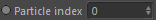

Node
Inports
Inports
Particle index

Index of the particle to access. This value must be between 0 and particle count - 1 (zero indexed).
You can use the Particle Info node to retrieve the particle count and feed it into a usual Xpresso iterator to browse all particles.
Physical Position
Assign a new position to the accessed particle.
The position must be given in physical space coordinates (of the linked Particle Group's Effex Scene).
Attribute::Alive
Change the 'alive' attribute (either 0 or 1) of the accessed particle.
Attribute::Bubble
Change the 'bubble' attribute (either 0 or 1) of the accessed particle.
Attribute::Collided
Change the 'collided' attribute (either 0 or 1) of the accessed particle.
Attribute::Spray
Change the 'spray' attribute (either 0 or 1) of the accessed particle.
Attribute::Temporary
Change the 'temporary' attribute (either 0 or 1) of the accessed particle.
Scalar Property
A scalar property according to the scalar properties defined in the 'Properties' list.
See Properties for more information.
State Property
A state property according to the state properties defined in the 'Properties' list.
See Properties for more information.
Vector Property
A vector property according to the vector properties defined in the 'Properties' list.
See Properties for more information.